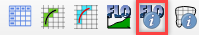

FLO-2D Info Tool
Contents
FLO-2D Info Tool#
Use the Info Tool to identify data in the User Layers and Schematic Layers. The layers must be active and checked on in the Layers panel. This tool also activates the Profile Tool widget.
Layers that work with this tool:
Channel layers
Left bank
Cross sections
Structure layers
Levee layers
Load the Data#
Start by loading the channel surface elevation and peak discharge from the HYCHAN.OUT file.

Select the HYCHAN.OUT file and click Open.

Make sure the Elevation raster is in the Layers group. If it is missing, drag Elevation.tif onto the map from QGIS Lesson 1 folder.
Channel Profiles#
Click the FLO-2D Info Tool.
Click any left bank line.

The data will load into the Profile Tool widget and the FLO-2D Plot panel.

Use the Profile Tool widget to select the data plot source.
In this example, the elevation raster is the y axis and the left bank length is the x axis.

Change the profile source from Raster to Schematic Layer and choose the max_water_elev field.
In this example, the water surface elevation is the y axis and the left bank length is the x axis.
Change the profile source to peak_discharge. In this case, the y axis is peak discharge and the x axis left bank length.

Channel User Layer Cross Sections#
The FLO-2D info tool can be used to activate a specific user cross section.
Click the FLO-2D Info tool.
Click and select a User Layer cross section.
This cross section is loaded into the Cross Section Editor widget.

This cross section is also loaded into the FLO-2D Plot panel.

Channel Schematic Layer Cross Sections#
The FLO-2D Info Tool can be used to review schematized cross sections.
Click the FLO-2D Info tool.
Click and select a Schematic Layer cross section.

This cross section data is loaded into a dialog box.

Structure Layers#
The FLO-2D info tool can be used to load and activate hydraulic structures.
Click the FLO-2D Info tool.
Click and select a structure line.
This line is loaded into its editor and plotted.

Levee Layers#
Levee Lines The FLO-2D info tool can be used to load the raster and levee schematized data profile of the levee lines.
Click the FLO-2D Info tool.
Click and select a Levee Line.
This line is loaded into the Profile Tool widget and plotted.
In this case, the elevation raster is plotted.

In the schematized profile case, the levcrest field is plotted.